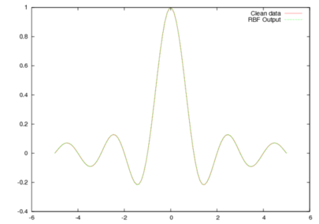
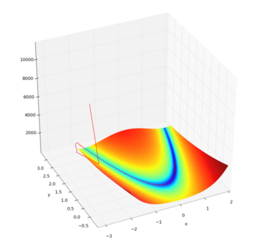
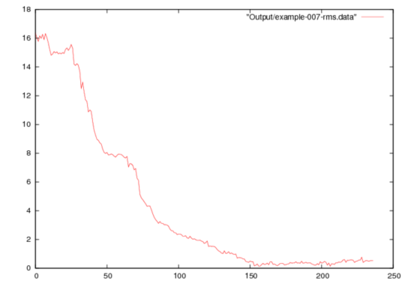
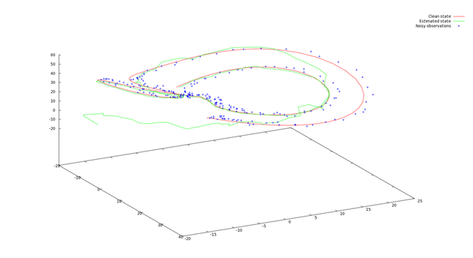

Welcome
EasyKF is a C++ library implementing the Extended Kalman Filter(EKF) as well as the Unscented Kalman Filter(UKF). It is provided with several examples. There is also a document in which the filters are derived. This document is still in progress. Contributions and feedbacks are welcomed.
Documentation
The doxygen documentation of easykf can be accessed at this link
Exemples
There are several examples provided with the library.
Example-001: XOR with a 2-2-1 MLP using UKF
In this example, we learn the parameters of a 2-2-MLP for solving the XOR classification problem. Running (maybe several times if falling on a local minima) example-001-xor, you should get the following classification :
An example set of learned parameters is :
x[0] – (9.89157) –> y[0]
x[1] – (4.18644) –> y[0]
Bias y[0] : 8.22042
x[0] – (10.7715) –> y[1]
x[1] – (4.18047) –> y[1]
Bias y[1] : -8.70185
y[0] – (6.9837) –> z
y[1] – (-6.83324) –> z
Bias z : -3.89682
Example-002: Extended XOR with a 2-12-1 MLP using UKF
Here we use a 2-12-1 MLP, with a sigmoidal transfer function, to learn the extended XOR problem. The transfer function is a sigmoid. The classification should look like this:

Example-003: RBF network using UKF
In this example, we use a RBF network with 10 kernels to approximate the sinc function on [-5.0,5.0] To make the life easier for the algorithm, we evenly spread the centers of the gaussians on [-5.0, 5.0].
The results are saved in 'example-003.data', the first column contains the x-position, the second column the result given by the trained RBF and the last column the value of sinc(x).

Example-004: MLP with multiple output UKF
We use a 2-2-3 MLP to learn the three boolean functions XOR, AND and OR using the Uscented Kalman Filter with vectorial output.
Example-005: Mackay robot arm data with a 2-12-2 MLP
In this example, we learn the two outputs (x,y) from the inputs (theta, phi) of the Mackay-robot arm dataset. For this we train a 2-12-2 MLP with a parametrized sigmoidal transfer function.
Example-006: Minimizing the Rosenbrock function with UKF
We use here UKF for parameter estimation to find the minimum of the Rosenbrock banana function f(x) = (1-x)^2 + 100(y - x^2)^2.

Example-007: Parameters and states of a Lorentz attractor with joint UKF
In this example, we try to find the parameters (initial condition, evolution parameters) of a noisy lorentz attractor. The dynamic of the lorentz attractor is defined by three equations. While observing a noisy trajectory of such a Lorentz attractor, the algorithm tries to find the current state and the evolution parameters (sigma, rho, beta). The samples are provided as (ti, x(ti), y(ti), z(ti)). To clearly see how UKF catches the true state, we initialized the estimated state of UKF to -15, -15 , -15. Below we plot the error between the right set of parameters and their estimate as well as the estimated state (x,y,z) compared to the true state and the noisy observations.

Example-008: Not working yet, supposed to be on square root UKF
Example-009: Parameters and states of a Lorentz attractor with joint EKF
In this example, we consider the same problem as in example-007 of estimating the parameters and state of a Lorenz attractor but this time we compute the estimates with EKF by providing the Jacobian of the evolution function.
External ressources
There are other libraries for Kalman filtering you might want to have a look to:
- EKF/UKF Matlab toolbox http://www.lce.hut.fi/research/mm/ekfukf/
- R. Van Der Merwe ReBel Matlab Toolkit for KF/EKF/UKF : http://choosh.cse.ogi.edu/rebel/
- C++ KFilter for EKF : http://kalman.sourceforge.net/index.php
There are several places where you can find informations about Kalman filtering, here are some:
- Detailed explanations on the filters http://www.enotes.com/topic/Kalman_filter
- Lots of references on http://lewpayne.blogspot.com/2010/06/kalman-filters.html